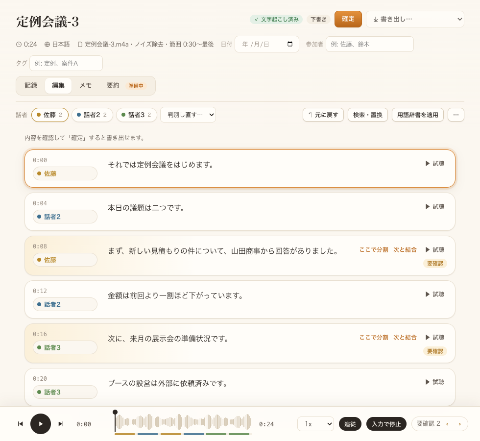
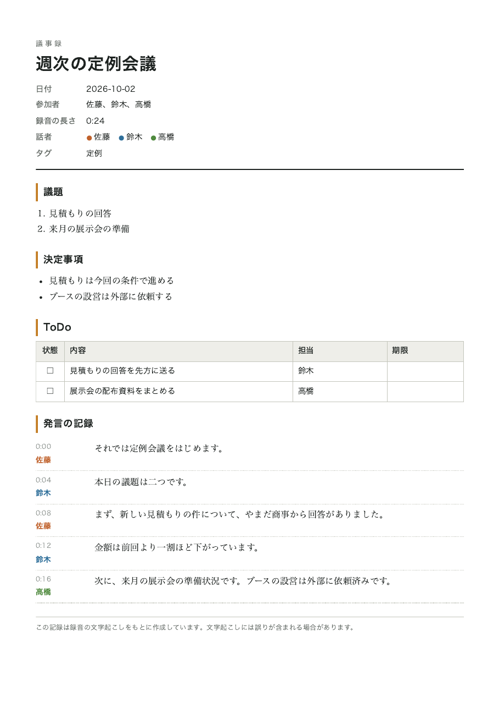

録音を、この端末の中で
議事録に。
会議・面談・取材の録音を、クラウドに上げずにパソコンの中で文字にします。誰が話したか、自信の低い箇所、議題・決定事項・ToDo まで。確認しながら直して、Word や PDF で渡せます。
macOS(Apple Silicon)対応。Windows 版は準備中です。

録って、文字にして、確かめて、渡す。
取り込みも、その場の録音も
m4a・mp3・wav・mp4 などを取り込めます。マイクで録音すると、話しながら仮の文字が出て、止めたあと高精度のモデルで文字起こしし直します。
誰が話したか
声の特徴から話者を分け、色分けして表示します。名前はまとめて付け替えられます。人数を指定して分け直すこともできます。
怪しいところから直す
自信の低い文に印を付け、そこだけを順に聞き直せます。文を押すとその位置から再生。入力中は自動で一時停止します。
要約の下書き(有料版・追加機能)
要点・決定事項・ToDo の下書きを作り、チェックや編集をしてから、議題・決定事項・ToDo に取り込みます。自動では保存しません。下書きには誤りや、話されていない内容が混じることがあります。
議題・決定事項・ToDo
担当と期限つきの ToDo を書き込み、そのまま書き出しに入ります。タグを付けて、過去の議事録を全文検索できます。
ノイズ除去と用語辞書
エアコンやキーボードの音を抑えてから文字にします。社名や専門用語は、辞書に登録した表記に置き換えます。
Word・PDF・字幕で渡す
確定した議事録を、Word・PDF・Markdown・テキスト・字幕(SRT)で書き出せます。
録音は、端末の外に出しません。
文字起こし・話者の判別・ノイズ除去は、すべてあなたのパソコンの中で行います。録音や文字を送る通信はありません。文字起こしと話者の判別に必要なモデルはアプリに入っているので、インターネットにつながっていなくても使えます(ライセンスの確認を除く)。有料版の要約(追加機能)を使うときだけ、要約のモデル(約 2.5GB)を、設定で「取得する」を押したときに一度ダウンロードします。要約も、取得したあとはパソコンの中で動きます。
通信する場面: ライセンスの認証・確認(ライセンスキーと端末の識別名)、更新の確認(アプリのバージョン。設定で止められます)、モデルの取得(モデルのファイル名。押したときだけ。要約のモデルを含む)。録音や文字を送る通信はありません。

まず無料版で、あなたの録音で試してください。
無料版はお試し用です。気に入ったら、有料版を一度買えば、制限なく使い続けられます。
| 無料版 | 有料版(買い切り) | |
|---|---|---|
| 文字起こしのモデル | 標準(小さなモデル) | 高精度(大きなモデル) |
| 文字起こしできる時間 | 累計 60 分・1件 15 分まで(議事録を消しても戻りません) | 制限なし |
| 取り込み・マイク録音・確認と修正・検索 | ○ | ○ |
| 議題・決定事項・ToDo、タグ | ○ | ○ |
| 話者の判別・ノイズ除去・用語辞書 | — | ○ |
| 書き出し | テキストのみ(末尾に無料版の表示) | Word・PDF・Markdown・テキスト・字幕・音声 |
| 要約(後から追加) | — | ○(使うときにモデルを取得。下書きを確認してから取り込み) |
| 価格 | 無料 | 発売時に掲載 |
サポートの期間・含まれる更新の範囲・返金の条件は、発売時にこのページに掲載します。
動作環境
| OS | macOS 12 以降(Apple Silicon)。Windows 版は準備中 |
| 空き容量 | アプリ本体で約 0.8GB(macOS の版を測定: アプリ 824MB、インストーラ 736MB。文字起こしと話者判別のモデルを含む)。要約の追加機能を使う場合は、モデルの取得でさらに約 2.5GB |
| メモリ(要約) | 要約の実行中、開発機(MacBook Air M2・メモリ 16GB)で最大約 5.6〜5.8GB を使用しました(測定条件での値で、保証ではありません)。メモリ 16GB 未満の機械での動作は未確認です。余裕のあるメモリでのご利用をおすすめします |
| 処理の目安 | 開発機(MacBook Air M2・メモリ 16GB)で、録音の長さの約 0.3〜0.4 倍の時間。1 時間の録音で約 22 分(合成音声での測定)。お使いの機械や録音によって変わります。要約は、約 2,200 字の架空の議事録で約 40 秒(同じ機械、±30% ほどのばらつき)。長い会議・Windows・低い性能の機械での速さは未測定です |
精度について
文字起こしには誤りが含まれます。録音の質(マイクとの距離、雑音、同時に話す人数)で大きく変わります。重要な箇所は音声で確認してください。無料版で、ご自身の録音で試してから購入されることをおすすめします。
よくある質問
インターネットにつながっていなくても使えますか?
文字起こし・話者の判別などはパソコンの中で行うため、通信なしで使えます(要約を使うときの、モデルの取得を除く)。ライセンスの確認のために、ときどき通信します(しばらく通信できなくても使い続けられます)。
要約は、どのように動きますか?
有料版の追加機能です。設定で要約のモデル(約 2.5GB)を取得すると、議事録の「要約」から下書きを作れます。要約もパソコンの中で動き、内容は送りません。下書きは必ず画面で確認・修正してから取り込みます。誤りや、話されていない内容が混じることがあります。
Web 会議の相手の声も録れますか?
アプリ内の録音はマイクの音が対象です。Web 会議の録音ファイルを取り込んで文字にすることはできます。
録音や文字は、どこに保存されますか?
あなたのパソコンの中の、アプリ専用のフォルダです。設定から全データを削除できます。パソコンのディスク暗号化(FileVault など)を有効にしておくことをおすすめします。
無料版の「累計 60 分」とは?
これまでに文字起こしした音声の合計の長さです。議事録を消しても戻りません。上限に達したあとは、有料版にすると続きから文字起こしできます。
録音してよいかは、誰が判断しますか?
会議や面談を録音する前に、参加者の同意を得てください。同意を得る責任は利用者にあります。
開発中のページです。名称・機能・価格は変更される場合があります。画面の画像は架空のデータです。